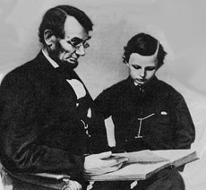
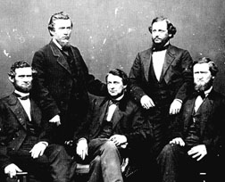

 |
| This famous photograph of Lincoln in 1864,
posing with his son Tad, was the work of Matthew Brady, the most celebrated
photographer of the Civil War era.
|
|
 |
| Clement Vallandigham (center) and some of the
admirers who hailed him as 'Valiant Val'. "Money you have expended without limits,"
he told House Republicans, "and blood poured out like water. Defeat, debt,
taxation, and sepulchers-these are your only trophies."
|
|